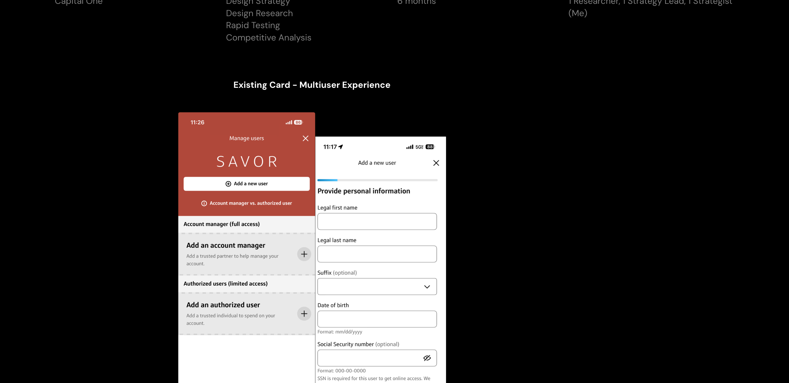

I helped shape the future of multi-user experiences in the world of credit cards at Capital One by propelling research-backed ideas forward to design teams, translating business needs into tangible customer experiences, and delivering a robust foundation for the future of multi-user.

Families and partners increasingly share access to accounts, but Capital One's tooling treated every user as an individual. Today, authorized users lack visibility, access to controls, shared financial information, and cannot participate or interact with the people most important to them.
Capital One's expanding product ecosystem will no longer support the ever-evolving and diverse needs of families. The inability to invite authorized users and create shared financial services short-circuits a demand many customers now consider in order to trust the bag.
The immediate risk: losing customers and their families to competitors, and also losing the future potential of their children and loved ones to grow alongside Capital One.
We uncovered rich insights with the "Sign Account Manager" and "Authorized User" roles, identifying 3 distinct user segments with different pain factors and needs. We briefly delineated how to grow our customers through testing the core primitives to ensure their MVP aligns with the ways we need to expand.
I pitched and performed a deep investigation into competitors' and adjacent approaches to multi-user banking, uncovering patterns, gaps, and opportunities into a direction the enterprise could design against.
The strategy fed directly into new customer experiences currently in active build. Today's teams within Capital One are hard at work planning, designing, and delivering the first future experiences we've spoken to in this case study. The next version of this case study will arrive alongside key details of the actively-being-built concepts.